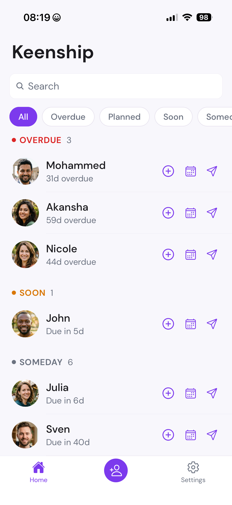
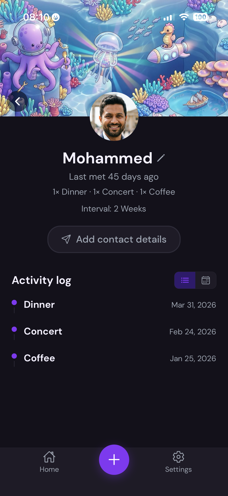
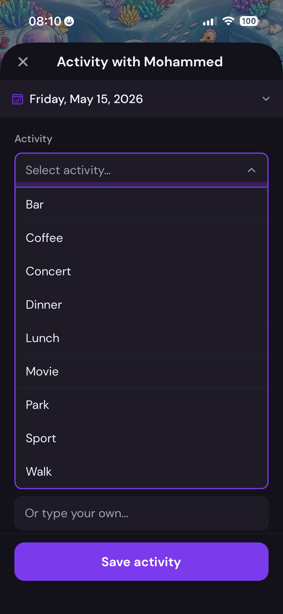

Keenship hilft dir, den Kontakt zu Menschen zu halten, die du nicht aus den Augen verlieren willst. Enge Freunde, ehemalige Kollegen, alte Bekannte – Menschen, an die du manchmal denkst und dir sagst: "Wir sollten uns mal wieder austauschen."
Keine Social Media, kein Feed, keine Follower – nur ein privates Gedächtnis für die Verbindungen, die dir wichtig sind.
Für urbane Menschen zwischen 30 und 50 wird echter Kontakt zur Ausnahme. Nicht aus Gleichgültigkeit – sondern weil der Alltag ihn schlicht verdrängt. Man verliert nicht die Verbindung zu Menschen. Man verliert den Moment, in dem man handeln müsste.
Du legst einzeln fest, wen du im Blick behalten willst – und setzt ein Intervall, wie oft du dich melden möchtest. Keenship berechnet daraus automatisch, wo jemand gerade steht: Überfällig, Bald oder Irgendwann. Der Homescreen zeigt dir täglich, wer gerade vernachlässigt wird – ohne Algorithmus, ohne Feed, ohne Fremde.
Du loggst in drei Taps, was ihr gemacht habt. Die App erinnert sich. Stille Achievements entstehen im Hintergrund – "3 Bars, 2 Walks, 1 Konzert" – nicht als Gamification-Druck, sondern als gemeinsame Geschichte, die sichtbar wird.
Homescreen → Kontakt antippen → Aktivität loggen. Weißt du sofort, was zu tun ist? Stolperst du irgendwo?
Keenship erinnert dich, wenn bei jemandem wieder Zeit wäre. Fühlen sich die Hinweise richtig an – oder kommen sie zu oft, zu selten, im falschen Ton?
Was hast du gesucht und nicht gefunden? Was wäre für dich der nächste natürliche Schritt gewesen?



Du wählst einzeln, wen du im Blick behalten willst, und legst ein Intervall fest – wie oft du dich melden möchtest. Die Einstufung in Überfällig / Bald / Irgendwann berechnet Keenship dann selbst, anhand der letzten Aktivität.
Bar · Kaffee · Konzert · Abendessen · Mittagessen · Kino · Park · Sport · Spaziergang. Optionale Freitext-Notiz. Drei Taps, fertig.
Aktivitäts-Typen pro Person werden gesammelt und sichtbar – „3 Bars · 2 Walks · 1 Konzert". Kein Punkte-System, kein Druck.
Alle Daten bleiben auf deinem Gerät. Manuelles Backup per Export. Keine Cloud, kein Account, kein Abo.
Für urbane Menschen zwischen 30 und 50, die wissen, dass echte Verbindungen das Wichtigste im Leben sind – aber im Alltag trotzdem den Kontakt verlieren. Keenship ist das private Gedächtnis, das für dein zukünftiges Ich arbeitet.
Keenship helps you stay in touch with people you don't want to lose sight of. Close friends, former colleagues, old acquaintances – people you sometimes think about and tell yourself: "We should catch up sometime."
No social media, no feed, no followers – just a private memory for the connections that matter to you.
For people in their 30s and 50s, genuine contact becomes the exception. Not out of indifference – but because everyday life simply crowds it out. You don't lose the connection to people. You lose the moment when you should have acted.
You choose individually who you want to keep track of – and set an interval for how often you want to reach out. Keenship automatically calculates where someone stands: Overdue, Soon, or Someday. The home screen shows you daily who's being neglected – no algorithm, no feed, no strangers.
You log in three taps what you did together. The app remembers. Silent achievements accumulate in the background – "3 Bars, 2 Walks, 1 Concert" – not as gamification pressure, but as a shared history that becomes visible.
Home screen → tap a contact → log an activity. Do you immediately know what to do? Do you stumble anywhere?
Keenship reminds you when it's time to reach out to someone. Do the nudges feel right – or do they come too often, too rarely, in the wrong tone?
What did you look for and not find? What would have been your next natural step?
You choose individually who you want to keep track of – from your contacts or added manually. Set an interval for how often you want to reach out. Keenship handles the rest: Overdue / Soon / Someday, calculated from your last activity.
Bar · Coffee · Concert · Dinner · Lunch · Cinema · Park · Sports · Walk. Optional free-text note. Three taps, done.
Activity types per person are collected and made visible – "3 Bars · 2 Walks · 1 Concert". No points system, no pressure.
All data stays on your device. Manual backup via export. No cloud, no account, no subscription.
For people in their 30s and 50s who know that real connections are the most important thing in life – but still lose touch in everyday life. Keenship is the private memory that works for your future self.